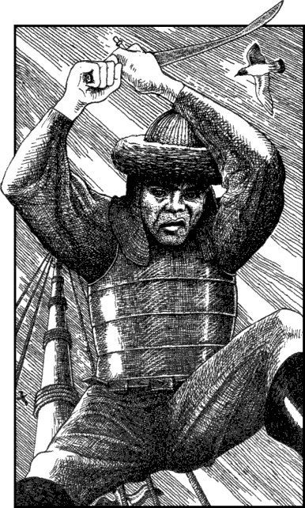

5
With a rousing cheer, the second wave of enemy raiders follow their leader and leap aboard The Pride of Sommerlund. The ship’s crew and the marines have suffered many casualties and they are now too weak and exhausted to be able to repel this renewed assault. You know that you must act swiftly if you are to avert a disaster.
Steeling yourself for what must be done, you shoulder your Bow and unsheathe a weapon. Then you leap from the rigging as the enemy leader passes below the mainmast. You hit the armoured warrior feet-first and slam him to the deck, but he quickly recovers from your surprise attack and, in the ensuing struggle, he manages to kick the weapon from your hand.
‘Leave him to me!’ he screams, warning off his henchmen who are poised to rush forward and cut you down. Slowly he unsheathes his scimitar and, with a sneer fixed to his cruel lips, he raises the blade in readiness to strike a mighty blow to your head.

Dar-Isun: COMBAT SKILL 39 ENDURANCE 38
You must fight the first round of this combat empty-handed. If you possess a close-combat weapon, you may use it from the beginning of the second round.
If you win this fight, turn to 340.